语言:
English
|
简体中文
|
繁体中文

免费在线 BMI 计算器
身体质量指数 (Body Mass Index, 简称BMI), 亦称克托莱指数, 是目前国际上常用的衡量人体胖瘦程度以及是否健康的一个标准。BMI 值超标，意味着你必须减肥了。
免费计算你的身体质量指数 (BMI)
你的 BMI 值:
，身体状态：
度量单位：
公制
英制
我的身高：
单位: 厘米 cm
我的体重：
单位: 千克 kg
BMI标准：
自动保存 BMI 历史记录
BMI 中国标准
分类
BMI 范围
偏瘦
<= 18.4
正常
18.5 ~ 23.9
过重
24.0 ~ 27.9
肥胖
>= 28.0
我的 BMI 历史记录
#
日期
身高
体重
BMI
操作
当前没有任何 BMI 记录。请输入你的身高和体重，并选中“自动保存 BMI 历史记录”，记算你的 BMI 指数。
提示: 浏览器的 Cookie 和 JavaScript 必须启用.